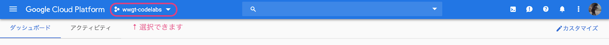
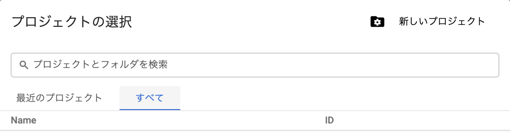

Go Conference 2019 Spring に実施するコードラボのための準備を行います。
Google Cloud Functions を利用するためには、Google Cloud Platform のプロジェクトが必要になります。今回は、コードラボのために用意したプロジェクトを利用します。
プロジェクトのアクセス制御に Google Groups を利用しているため、下記の URL の手順に従って Google Groups に参加してください。
下記のURLから Google Cloud Console にアクセスし、プロジェクトを選択しましょう。
https://console.cloud.google.com/
用意しているプロジェクトは、下記の通りです。
このプロジェクト名は、Google Cloud Functions の公開先アプリケーションIDとしても利用します。

すでに別のプロジェクトを利用したことがある方は、"最近のプロジェクト" というタブにプロジェクトの一覧が表示されています。新しくプロジェクトに参加するときは、"すべて" のタブを選択してください。

同じプロジェクト上で複数人が Google Cloud Functions を作成するとき、お互いのアプリケーションの上書きを避けなければなりません。
このコードラボを始めるときに、ユニークな文字列を配布します。配布された文字列を Cloud Functions の名前として利用してください。
Go のプログラムを公開するときに、Cloud Functions 名を使用します。
{Cloud Functions Name} = {配布された文字列} とします。
$ gcloud functions deploy {Cloud Functions Name} \
--runtime go111 \
--entry-point TaskManagement \
--trigger-httpGo のプログラムを公開したあと、1度だけ実行します。
$ gcloud beta functions deploy {Cloud Functions Name} \
--set-env-vars MY_CODE={Cloud Functions Name}それでは、はじめましょう！